Virtua Fighter 5 FS コスプレ：リリアン女学園 編
懐かしの『Virtua Fighter 2』が Xbox 360 で配信されたのを良い機会として、 VF5FS の追加衣装を全部購入した。今、私はキャラに「コスプレ」をさせて楽しんでいる。他のゲーム(後述)の「キャラクリ」と違い、自由度が少ないが、限られたコスチュームで自分が気に入るコーディネイトをした結果、何かのテーマやキャラが見えてくるのが楽しい。 今回は、そうやって「コスプレ」させたのをテーマごとに《リリアン女学園 編》《七曜 編》《その他 編》としてまとめ、紹介する。この記事は『マリア様がみてる』の《リリアン女学園 編》で、山百合会のメンバーをモチーフとした「コスプレ」を扱う。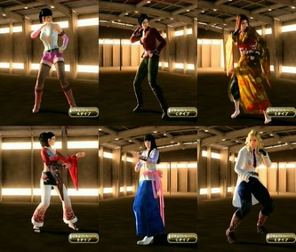
なお、この記事のリード部分は各編でも同じなので、すでに読んだ方は次の節まで読み飛ばしてくださればよい。 『Virtua Fighter 5 Final Showdown』(バーチャファイター５ファイナルショーダウン、略して VF5FS) は、元はアーケードゲームだったのが、Xbox 360 または PlayStation 3 に移植されたもので、ダウンロードで購入できる。 さらに追加コスチュームを買うことでキャラの衣装を変えられるようになる。各キャラごとにコスチュームが売っているが、複数のキャラがセットになったものが２セットあり、その２セットを変えばすべのキャラの衣装が揃う。 私は前作の『Virtua Fighter 5 Live Arena』(以下 VF5LA と略す)もダウンロード購入していたが、そちらは衣装は各キャラで攻略をしてはじめて手に入るものだった。ところが、今作 VF5FS のダウンロード版では、キャラのコスチュームセットを買えば、いきなりすべての衣装が使える。 だから、「コスプレ」目的ならば、ダウンロード購入時に一気に複数キャラのアイテムセットのその１とその２を揃えてしまえば、幸か不幸か最初に出たアイテムセット以来、新しいコスチュームの追加はないので、すべての衣装を制限なく使えることになる。(CG の動きのはげしさを避けるためらしい制限はある。)今なら全部で 3600 MSP (PS3 だと4500円)。オススメ。 (「コスプレ」のこのゲーム内での正しい呼称は「アイテムカスタマイズ」らしい。Terminal メニューから入る。) なお、『Virtua Fighter 2』が好きだったオールドファンの中には「バーチャ」が、3や 4 になってどんどん操作や概念が難しくなることに付いていけなくなった方もいるかもしれない。(私もそうだった。)でも、この 5 のシステムは、あえて操作を単純化する方向が出されているようで、ファンの多かった VF2 のグラフィックを極限まで美化した「だけ」に留めたといった感がある。ロートル格闘ゲーマーにもオススメである。 この先、コスプレデータの「レシピ」すなわち使った衣装名等も公開するが、言及のない身体部位はアイテムを使っておらず、省略した。 ■前作のころ 前作 VF5LA のころ、それを買ってはみたものの、『ソウルキャリバー４』のキャラクリ(キャラクタークリエイション)で満足していた私は、VF5LA の攻略本に載っていた衣装を見て、今一つ創作意欲が湧かない感じだった。キャラクリに関しては面食いな私にとって、ある意味個性的な VF5 のキャラは、あまりいじっておもしろそうになかった。そんな中、唯一「そそる」ものがあったのが、サラだった。こういう細身で長身の美人というのは、細身にするとロリっぽくなりがちな『ソウルキャリバー４』にはなく新鮮だった。 上でも書いたが前作 VF5LA ではコスチュームは、ゲーム中に手に入れる必要がある。CPU 対戦でランダムにアイテムが手に入るのだが、そのときゲーム内ポイントももらえることがあり、普通はそのポイントでアイテムを買う。だから、買えるアイテムを狙ってるなら、しばらく戦っていればすぐに手に入る。しかし、まったくのランダムや特定の条件を満たさないと手に入らないレアアイテムもあり、それが欲しければ長くゲームを続ける必要があった。 最初、それほど長くプレイするつもりがなかったので、買えるアイテムだけで、コーディネイトを考えたのが、下の「島津 由乃」として紹介したコスプレである。ただ、由乃を作ろうとしてこうなったのではなく、ちょっと地味めの美人というのを目標にコーディネイトをしたのだった。 ただ、いくつか試したいアイテムがあり、それが手に入ってなかったので、しばらく続けていると、それ以外のアイテムがレアなものも含めて結構早いペースで手に入った。 すると、欲が出て他のコスチュームも試してみたくなるのが人情。 VF5LA は VF5FS と違って、一つのキャラはコスチュームタイプごとに一つの組み合わせ、Eタイプ、Sタイプがなかったので合計４つのコスチュームしかセーブできない。名前の登録は(漢字で)出来たが、その４つのコスチュームをまとめてのもので、登録ごとにアイテムやポイントの融通はできず、一つの名前で４つのコスプレをするほかなかった。 アイテムと同じくコスチュームタイプも手に入れるべきもので、それで最初は、 AタイプとBタイプしか使えず、Cタイプの由乃を作るまでに臨時で使っていたキャラを発展させることで、下の「福沢 祐巳」と《七曜 編》の「ヒラリー」が自然にできていった。 ■福沢 祐巳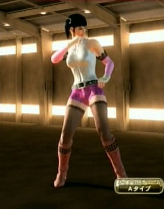
VF5LA で「黒髪サイドテールヘアー」がアイテムとして手に入ったとき、たまたま Aタイプは、小悪魔系ピンキッシュなコーディネイトをさせていた。そこにこの髪型を試したところ、なんとも『マリア様がみてる』の福沢祐巳っぽく、そう感じはじめると、Cタイプのキャラが島津由乃に見えてきた。 『マリア様がみてる』の小説では最後は祐巳がロサ・キネンシスとなるが、しかし、一年の最初のころのイメージを持つ読者たる私には違和感があった。 でも、それは読者から見たらそうだというだけで、高校生のリアルな時間感覚では３年と１年の差は歴然としている。１年生にとってみれば、「格闘生徒会」たる山百合会のカワイイ系のロサ・キネンシスに持ってるイメージってのは実はこんな感じなんではないか？ このコスプレを作ってから、そう考えるようになった。 VF5LA のころは名前を付けることができなかったが、サラのAタイプとCタイプのコスプレは、私の中では祐巳と由乃の「ダチ公」ペアとして定着していた。 名前: Yumi 素体: サラ Aタイプ 髪、帽子: 黒髪サイドテールヘアー 手首: ピンクアームウォーマー 手: ホワイトストライクグローブ 首: シルバースターネックレス インナー: ホワイトレザーボディースーツ ベルト: グレーレザーベルト パンツ: ピンクエナメルホットパンツ 足: ピンクロングリングブーツ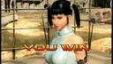
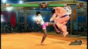
■島津 由乃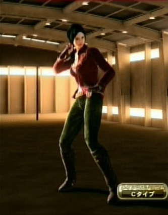
三年になった祐巳がカワイイ系なら、一年のころ「病弱系」とでも言うべき由乃は、三年で「お姉さま」になると、地味系…という言い方はできないだろうから、文学系または、落ち着いた大人の雰囲気もあるけど快活または活動的…という複雑な評価になるのではないか？ このコスプレを整えてる際中、そんなことを考えた。アウターの赤をピンクに変えたり、それにつれてジーンズやインナーの色を変えたりしてみたが、結局、最初のころに近いイメージに落ち着いた。女教師メガネは長く試したが、外した。ほくろを付けるのはずっと変えることがなかった。 名前: Yoshino 素体: サラ Cタイプ 髪、帽子: 黒髪ロングおさげヘアー 鼻、口: ほくろ 手首: ゴシックバングル 手: ブラウンソトライクグローブ 首: イニシャルネックレス インナー: ライトブルーキャミソール アウター: ブラウンフラワーガーデンシャツ ベルト: ベージュスタッズベルト パンツ: オリーブジーンズ 足: ブラウンロングリングブーツ ■藤堂 志摩子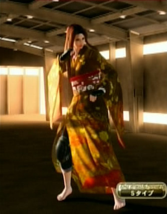
そして VF5FS を買って、VF5LA のアイテムがすべて使えることを知って、まず VF5LA のサラのコスプレ(祐巳と由乃を含め)を移植した。そして、新しいEタイプ、Sタイプをいろいろ試しているときに、祐巳と由乃とくればぜひ作りたかったあのキャラ、そう、藤堂志摩子を作ろうということになった。 VF5LA のころ、アオイのコスプレとして志摩子を作ろうとしたことがある。でも、攻略本に載ってる衣装や実際に手に入れたアオイの衣装で試しても、どうにも志摩子のイメージにならなかった。 VF5FS のサラには着物がある。なるほど試しに着せてみよう。着物から生足が見えるのはなんともはしたない。とりあえずジーンズでも着せよう。……あ、あ、その姿は、志摩子だ！といった感動の出会い(!?)があって、このコスプレができた。 「格闘生徒会」山百合会が乗り出した事件…そこに志摩子は着物でやって来る。事ここに致っても和睦を持ち出すのかと思いきや、草履を抜ぎ飛ばし、はだけた着物の下には、すでにニーパッドまで装着済みのジーパン姿。さすが、聖様を継いだロサ・ギガンティア、<ruby><rb>殺</rb><rt>や</rt></ruby>る気まんまん。…とかいうストーリーがチラと想い浮かんだ。 名前: Shimako 素体: サラ Sタイプ 髪、帽子: ブラウンビューティーロングヘアー 瞳: ブラウンコンタクトレンズ 手首: ホワイトパールブレスレット 手: ブラックストライクグローブ 首: ピンクハートネックレス アウター: 黄色い蝶花柄振袖 ベルト: ベルト外し(Sタイプ) パンツ: ブルージーンズ 足: 裸足(Sタイプ) スネ: ミリタリーニーパッド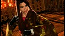
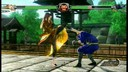
■松平 瞳子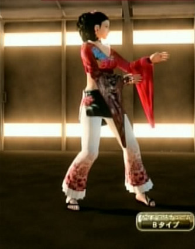
山百合会に関しては志摩子まで作ってかなり満足して、それで終った気になっていた。VF5LA ではレアアイテムを手に入れるまでやりこまなかったアオイが、 VF5FS では全衣装が使えるので、それでいろいろ「実験」をしていた。 VF5LA のサラでやったように、とりあえず、各コスチュームタイプで衣装を作ってみようとしたとき、偶然できたのが、このキャラだった。 片側だけだけどそのドリルな髪型、赤薔薇を思わせるデザイン…、どうもこれは松平瞳子だ…ということになった。 名前: Touko 素体: アオイ Bタイプ 髪、帽子: ハードウェーブポニーテール 耳: 赤いコスモスの耳飾り 手: 合気篭手 アウター: 赤色ビキニ振袖 パンツ: 和風ホワイトデニムパンツ 足: ブラックミュール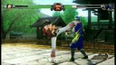
■二条 乃梨子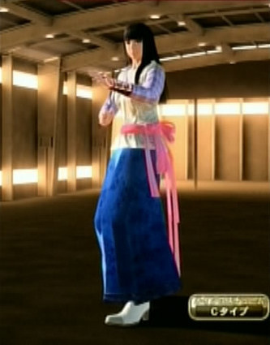
瞳子ができたなら乃梨子を作らねばならない。それが物の道理というものだ。(^^; アオイでちょうど Cタイプが残っていたこと、その前に「鱗模様の白合気袴」と「姫カット」を合わせたコスプレをしたいと思ってたことがちょうど重なって、こうなった。 あと、細かいところは瞳子と「おそろい」にしようとして、合気篭手とコスモスの耳飾りを揃えた。他のキャラでは自由度が足らないこともあって花飾りなどをうまく薔薇の色に合わせられなかったのだけど、ここの耳飾りは、白と赤を合わせることができた。 名前: Noriko 素体: アオイ Cタイプ 髪、帽子: 姫カット 耳: 白いコスモスの耳飾り 手: 合気篭手 アウター: 鱗模様の白合気袴 パンツ: 花柄青合気袴 足: ホワイトハイカラブーツ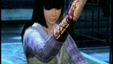
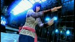
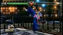
■佐藤 聖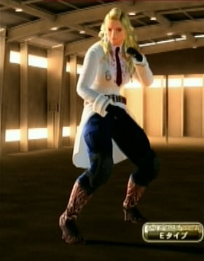
ベネッサで、カラス天狗かキャットウーマンみたいなキャラが作れないかと試しているとき、ブロンドふわふわパーマヘアーを被せた姿が不思議に、佐藤聖のイメージに重なった。それらのキャラは作れなかったが、そこから佐藤聖らしきものを組んでできたのがこのコスプレになる。 ああ、石を投げないで。聖様ファンには怒られそうだが、祐巳と由乃をカッコイイ系に傾けたため、聖様の「<ruby><rb>漢</rb><rt>おとこ</rt></ruby>っぽさ」を表すには、より武闘派的な方向に傾ける必要があった…といった感じか。 実は、前作 VF5LA のころはサラに似た髪形があったので、 残っていた Dタイプで、聖様らしいものを作ってみたことがある。でも、聖様というよりは、『ベルばら』のオスカルにしか感じられず、なんでかなぁと不思議に思っていた。 それがベネッサを使うことで解消されたように感じるのは、つまり、聖様が持つある種の不器用さが大事な個性だったということなのではないか？とか言い訳してみる。 名前: Sei 素体: ベネッサ Eタイプ 髪、帽子: ブロンドふわふわパーマヘアー 瞳: ブルーコンタクトレンズ 鼻、口: ブラウンアイブロウ 手: ブラックミリタリーグローブ 首: レッドオフィサーネクタイ インナー: 花柄模様のピンクブラウス アウター: ホワイトオフィサージャケット 肌: 色白 ベルト: ブラウンレザーベルト パンツ: ブルーコンバットパンツ 足: ブラウンウエスタンブーツ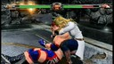
■その他のメンバーについて 祐巳が三年になるところの生徒会の付陣、または、その成長した姿というところを作ったということにして、私は満足した。これ以外の山百合会のメンバーを作るなら…。 水野蓉子は、パイのコスプレで決まり。鳥居江利子は、アイリーンで作るのがおもしろそう。小笠原祥子は、アオイかサラか。支倉令は、難しいな…パイかアオイか、彼女は案外ひょうきんだという認識が私にはあるのでアイリーンで作るかもしれない、または、その男性性的役割を過度に強調して、リオンあたりの男性キャラで作ってしまうか。 でも、私は、昔からなんかバーチャファイターのパイが苦手で、そこに食指が動かないんだよな…。ってことで打ち止め。 (…とこの記事の投稿時は考えていたが、続けることにした。→《リリアン女学園 編２》へ。) ■配布物 なお、これらの「コスプレ レシピ」と画面写真をまとめたものを zip化して同人的公開物として SugarSync に置いてあります。 JRF_VF5FS_Cosplay.zip。 VF5FS は、SEGA の 2012年発売の著作物です。私自身は「レシピ」を同人で売れたりしたらいいのになぁ…即売会とかのお祭りにゲーム機とディスプレイを持ちこんで遊べないかなぁ…とか夢想しています。ただ、需要もそれほどないでしょうし、とりあえず公開したほうが愛着を持ってもらえるかと考え、無料で公開しています。ネットで公開した以上、SEGA がどういうかはわかりませんが、基本的に私としては自由に使っていただいてかまいません。 とはいえ、同人活動への色気は残しておきたいので、ダウンロード数がカウントできる SugarSync に置いています。そこに別サイトからリンクするのはいつでもこちらがリンクを切れるのでいいのですが、別サイトにアーカイブを置いての配布は、私か SEGA がいいと言わない限りやめていただくようお願いします。(私の公開自体が同人誌な勝手な公開ですので、SEGA の明示の許諾さえあれば、私は文句をいいません。) ■関連 ●VF5FS コスプレシリーズ(《リリアン女学園 編》、《七曜 編》、《その他 編》、《リリアン女学園 編２》、《イロモノ 編》、《懐かしのスター 編》)。この記事の続きとして《リリアン女学園 編２》がある。 ●『マリア様がみてる』。元は小説で、アニメのほか、実写映画にもなっている。特に実写のは日本の新しい「ファンタジー」路線として個人的には、高く評価している。 ●『ソウルキャリバー４』。最初で「他のゲームのキャラクリ」というのはこのゲームのキャラクタークリエイションのこと。このブログで以前、作ったキャラを紹介している。(《バビル二世編》、《懐かしキャラ編１》、《懐かしキャラ編２》) ●《バーチャファイター５ ファイナルショーダウン: ぶるのば》。『ソウルキャリバー４』のキャラクリに関してお世話になった、きろん様による VF5FS の紹介ページ。 更新：2012-12-09,2012-12-21 初公開：2012年12月09日 19:18:27 最新版：2012年12月21日 21:23:43
Trackbacks: 《Virtua Fighter 5 FS コスプレ：リリアン女学園 編 その２》 from JRF の私見：雑記 先日の VF5FS コスプレの三つの記事のあと、全キャラの衣装を調べるべく、とにかく全キャラに一つずつ「コスプレ」を作ってみることにした。VF5FS の「コスプレ」は、他のゲーム(後述)の「キャラクリ」と違い、自由度が少ないが、限られたコスチュームで自分が気に入るコーディネイトをした結果、何かのテーマやキャラが見えてくるのが楽しい。 今回は、そうやって「コスプレ」させたのをテーマごとに《リリアン女... 受信： 2012-12-21 21:10:37 (JST) Comments: �That was kind of eye-opening to meWhile other teams like the Carolina Panthers, San Francisco 49ers Wholesale Jerseys From China Seattle Seahawks have mixed in elements of the option from the spread formation to enhance the skills of their athletic quarterbacks, the Redskins have taken it to another level by extensively featuring the pistol offense in their game plans: is the reward of talking about it worth the risk of being exposed, 221 lbs 投稿: MageSquange | 2012-12-14 22:19:00 (JST) Links: Virtua Fighter 2: http://amcvt.sega.jp/model2/vf2.html リリアン女学園 編: http://jrf.cocolog-nifty.com/column/2012/12/post.html 七曜 編: http://jrf.cocolog-nifty.com/column/2012/12/post-1.html その他 編: http://jrf.cocolog-nifty.com/column/2012/12/post-2.html マリア様がみてる: http://ja.wikipedia.org/wiki/%E3%83%9E%E3%83%AA%E3%82%A2%E6%A7%98%E3%81%8C%E3%81%BF%E3%81%A6%E3%82%8B Virtua Fighter 5 Final Showdown: http://amcvt.sega.jp/vf5fs/ Virtua Fighter 5 Live Arena: http://virtuafighter5.jp/xbox360/ ソウルキャリバー４: http://www.soularchive.jp/SC4/ ベルばら: http://ja.wikipedia.org/wiki/%E3%83%99%E3%83%AB%E3%82%B5%E3%82%A4%E3%83%A6%E3%81%AE%E3%81%B0%E3%82%89 リリアン女学園 編２: http://jrf.cocolog-nifty.com/column/2012/12/post-3.html JRF_VF5FS_Cosplay.zip: https://www.sugarsync.com/pf/D252372_79_8912523711 イロモノ 編: http://jrf.cocolog-nifty.com/column/2012/12/post-4.html 懐かしのスター 編: http://jrf.cocolog-nifty.com/column/2012/12/post-5.html バビル二世編: http://jrf.cocolog-nifty.com/column/2010/10/post-1.html 懐かしキャラ編１: http://jrf.cocolog-nifty.com/column/2010/11/post-1.html 懐かしキャラ編２: http://jrf.cocolog-nifty.com/column/2010/11/post.html バーチャファイター５ ファイナルショーダウン: ぶるのば: http://bluenova.cocolog-nifty.com/blog/2012/06/post-f007.html
後方参照 (18 件)
- URL参照 前期の翌日(2016-01-01)から昨日(2016-03-31)まで 91 日間のアクセス解析・近況など 2016年04月01日 12:53:25
- URL参照 前期の翌日(2015-10-01)から昨日(2015-12-31)まで 92 日間のアクセス解析・近況など 2016年01月01日 01:58:23
- URL参照 前期の翌日(2015-07-01)から昨日(2015-09-30)まで 92 日間のアクセス解析・近況など 2015年10月01日 13:47:48
- URL参照 前期の翌日(2015-04-01)から昨日(2015-06-30)まで 91 日間のアクセス解析・近況など 2015年07月01日 05:36:05
- URL参照 前期の翌日(2015-01-01)から昨日(2015-03-31)まで 90 日間のアクセス解析・近況など 2015年04月01日 09:16:30
- URL参照 前期の翌日(2014-10-01)から昨日(2014-12-31)まで 92 日間のアクセス解析・近況など 2015年01月01日 06:55:14
- URL参照 前期の翌日(2014-07-01)から昨日(2014-09-30)まで 92 日間のアクセス解析・近況など 2014年10月01日 05:31:54
- URL参照 前期の翌日(2014-04-01)から昨日(2014-06-30)まで 91 日間のアクセス解析・近況など 2014年07月01日 09:02:01
- URL参照 前期の翌日(2014-01-01)から昨日(2014-03-31)まで 90 日間のアクセス解析・近況など 2014年04月01日 06:35:22
- URL参照 前期の翌日(2013-10-01)から昨日(2013-12-31)まで 92 日間のアクセス解析・近況など 2014年01月01日 01:27:22
- URL参照 前期の翌日(2013-07-01)から昨日(2013-09-30)まで 92 日間のアクセス解析・近況など 2013年10月01日 01:14:59
- URL参照 近況。甥達が来て帰った。3DS『ガルモ』をネットプレイ中。 2013年08月27日
- URL参照 前期の翌日(2013-04-01)から昨日(2013-06-30)まで 91 日間のアクセス解析・近況など 2013年07月01日 01:50:58
- URL参照 前期の翌日(2013-01-01)から昨日(2013-03-31)まで 90 日間のアクセス解析・近況など 2013年04月01日 01:17:46
- URL参照 前期の翌日(2013-10-01)から昨日(2012-12-31)まで 92 日間のアクセス解析・近況など 2013年01月01日 01:17:42
- URL参照 Virtua Fighter 5 FS コスプレ：リリアン女学園 編 その２ 2012年12月21日 21:09:38
- URL参照 Virtua Fighter 5 FS コスプレ：イロモノ 編 2012年12月21日 21:13:20
- URL参照 Virtua Fighter 5 FS コスプレ：懐かしのスター 編 2012年12月21日 21:17:33